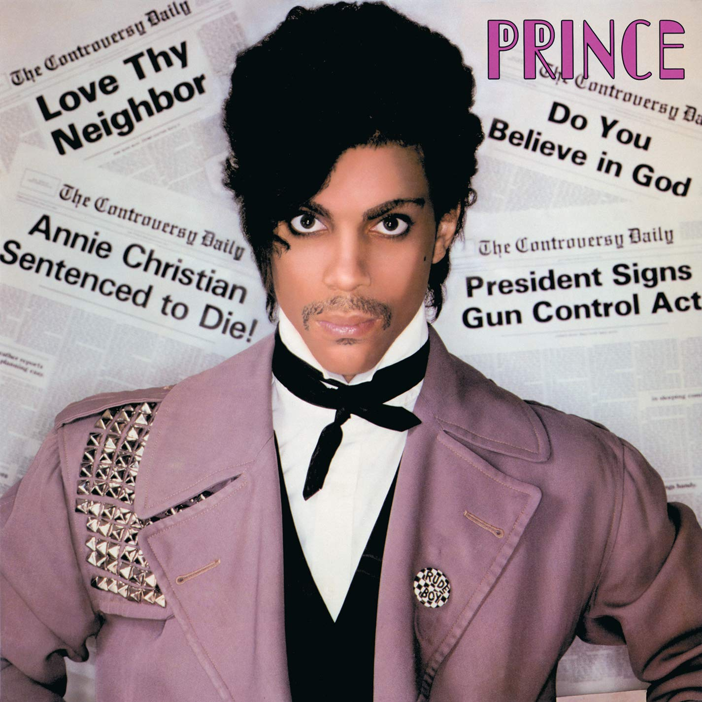
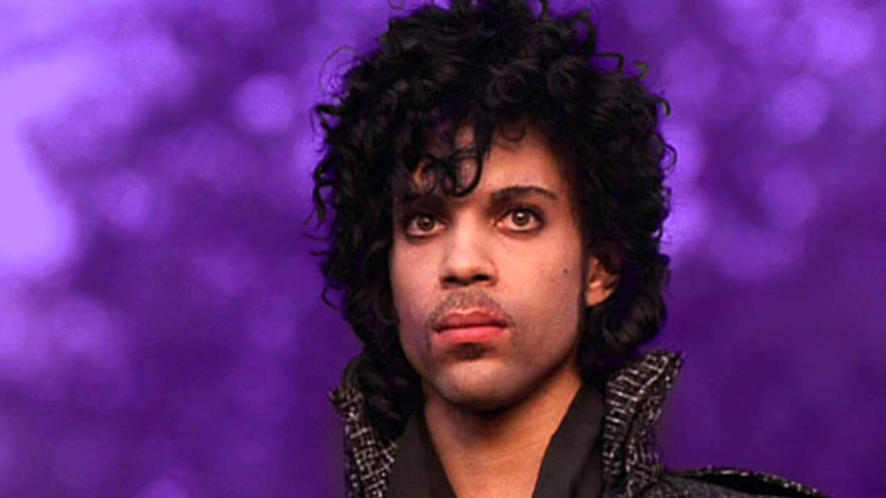
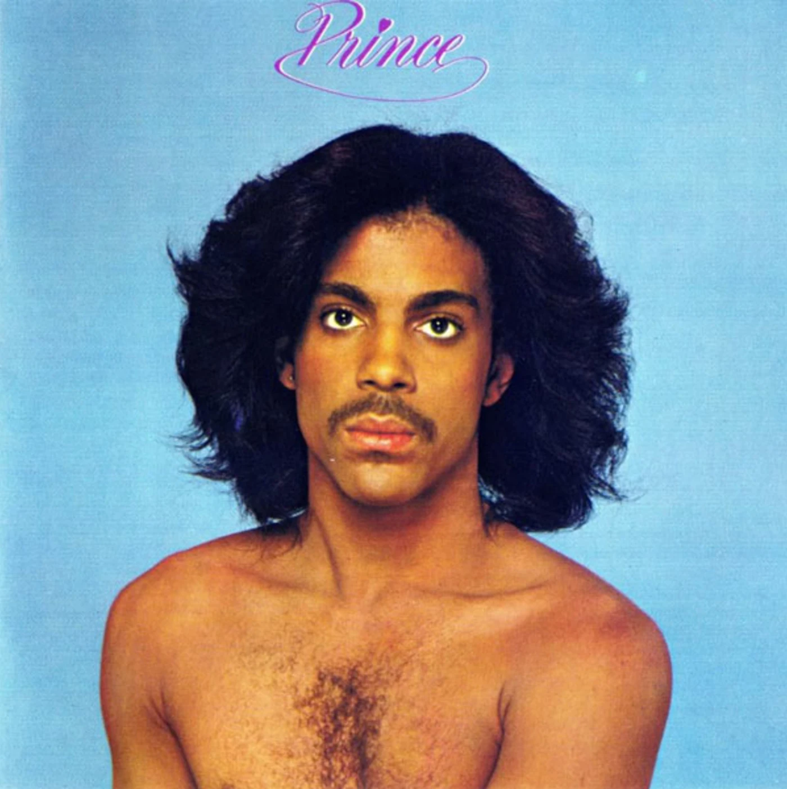

Prince's Career



Awards and Honors
- 1985 "Purple Rain" Best Rock Performance by a Duo or Group with Vocal
- Best Score Soundtrack for Visual Media
- "I Feel for You" Best R&B Song
- 1987 "Kiss" Best R&B Performance by a Duo or Group with Vocal
- 2005 "Call My Name" Best Male R&B Vocal Performance
- "Musicology" Best Traditional R&B Performance
- 2008 "Future Baby Mama" Best Male R&B Vocal Performance
- "1999" Hall of Fame Induction
- 2011 "Purple Rain>" Hall of Fame Induction
- 2017 "Sign o' the Times Hall of Fame Induction
Grammy Awards
- Golden Globe Award "The Song of the Heart" 2007 Best Original Song "Happy Feet"
- Academy Award for Best Original Song Score for Purple Rain
Other Awards
Skills and Talents
- record producer
- dancer
- actor
- filmmaker
- songwriter
- Vocals
- guitar
- keyboards
- piano
- bass
- guitar
- drums
Collaborations
- Chaka Khan
- Madonna "Love Song"
- Sheena Easton "The Arms of Orion"
- Beyonce "Purple Rain"
- Amy Winehouse "Love is a Losing Game"
- Lenny Kravitz "American Woman"
- Tom Petty, Steve Winwood, Jeff Lynne "While My Guitar Gently Weeps"
- Kate Bush "Why Should I Love You"
- Stevie Nicks, "Stand Back"
Residences
- 915 Logan Avenue North, Minneapolis (1958 - 1965)
- 2620 8th Avenue North, Minneapolis (1965 - 1973)
- Paisley Park, (1987-2016, his death)